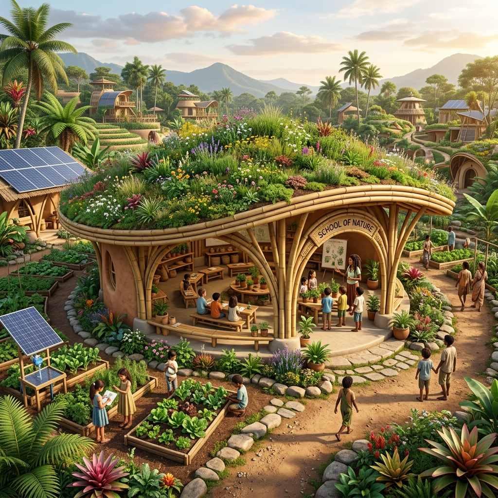
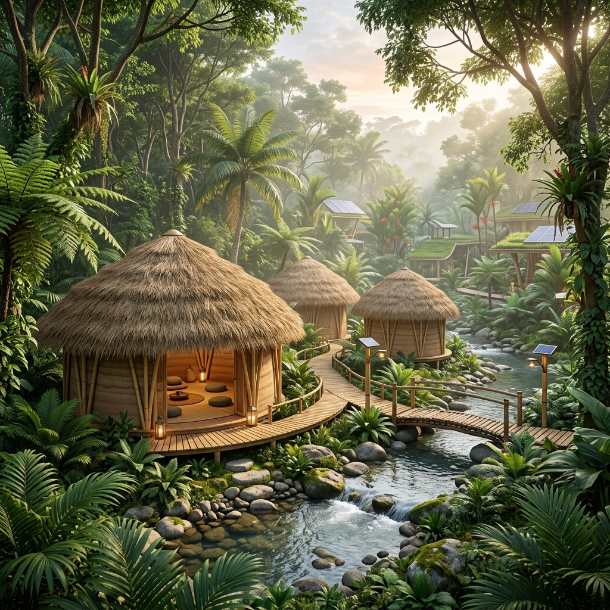

Zonas de Vivência
Espaços projetados para coexistir, aprender e se regenerar.
ZONA 3 & 6/7
Núcleo Comunitário
Aluguel de quartos e chalés privativos totalmente integrados à Oca Principal.

ZONA 4
Escola da Natureza
Um ecossistema de aprendizado dinâmico.

ZONA 5
Centro de Retiros
Nosso polo de turismo holístico regenerativo.